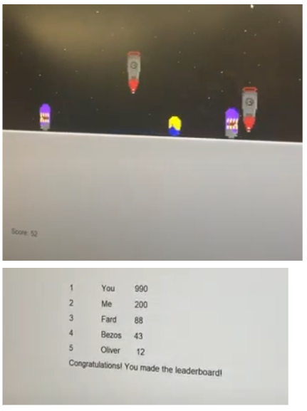

This is my Portfolio Page!
1.1.9 Project

For our first project, we made a make a pizza interactive. The base of the pizza, the dough and sauce, is provided at the start. As the program runs, it will ask the user if they want cheese. If they answer yes, the cheese would move onto the pizza. The same process happens for the other tow toppings, pepperoni and bell peppers. And if the user answers no, the process would be skipped and will move onto the next question.
1.2.5 Project
The player can move the minion left and right and can make it jump. There will be two of the purple evil minions moving left and right and rockets falling from the top of the screen. The objective is to navigate the minion to avoid hitting the purple minions and avoid getting hit by the rockets. There are also spinning bananas that appear randomly and when the player gets the minion to eat one, the minion has 1.2 seconds to hit a purple minion to make it disappear. The game is over when the minion is hit by a purple minion or a rocket. The scores will depend on how long the player can avoid all the obstacles.
Scratch Project
We are going to have three unicorn adjacent beings racing along a horizontal background. Each player character will have its own aesthetic. All three players can control a unicorn adjacent being by using the WASD, IJKL, and arrow keys. We’ll also add barriers for the unicorn adjacent beings to jump over. First player to cross the finish line wins. When you hit a hurdle (or other unspecified obstacle) your player character will face its end.
2.1.6 Project

For this project, my group and I had to debug the code to fix the errors. We identified the problems within the fishtank monitor, then decrypted the encrypted codes and modified the code. The problems were embedded in the temperature, magnitude, and alkalinity monitors. This project demonstarted how important it is to test early and update software to avoid creating errors.